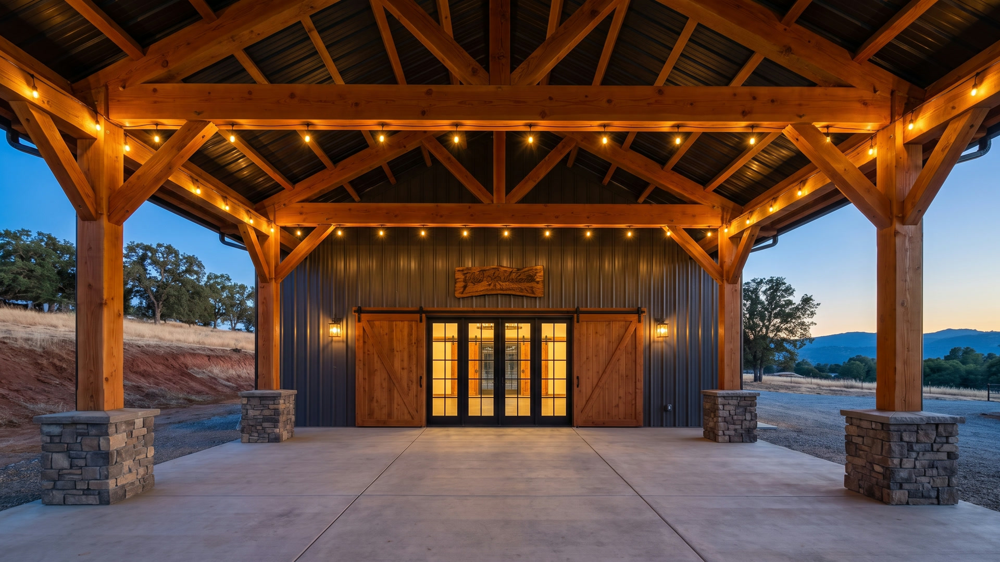
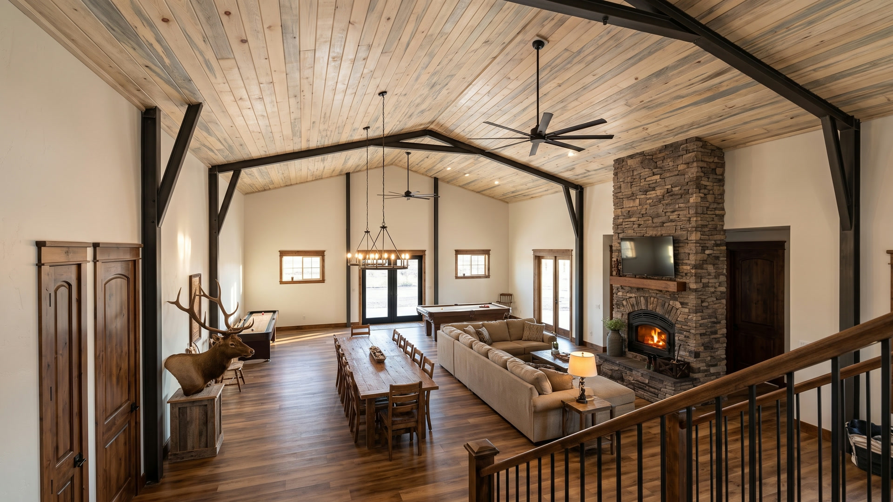
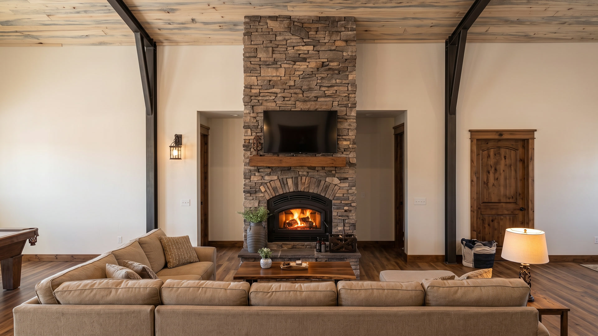
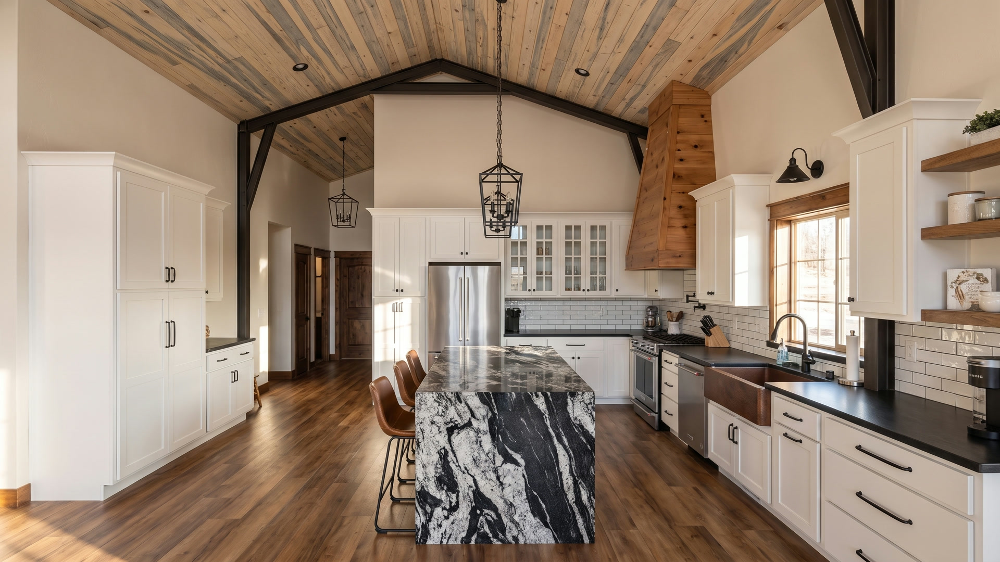
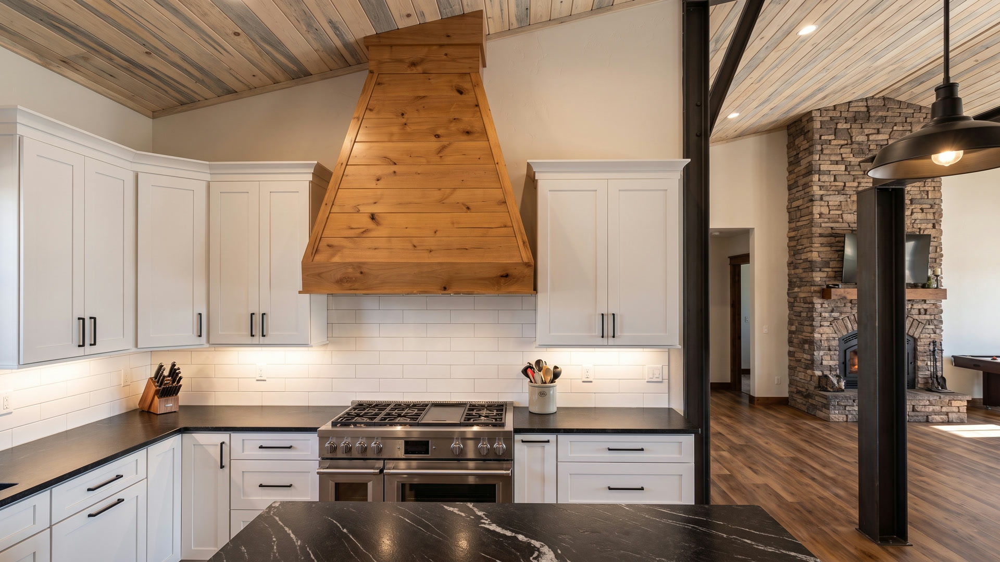
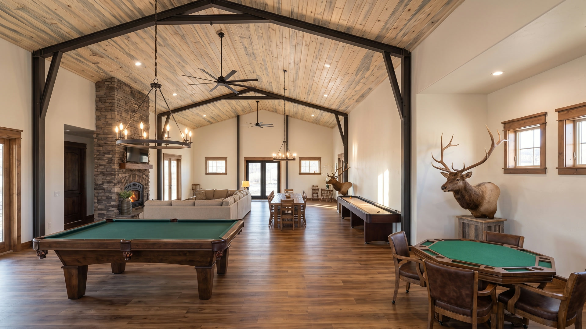
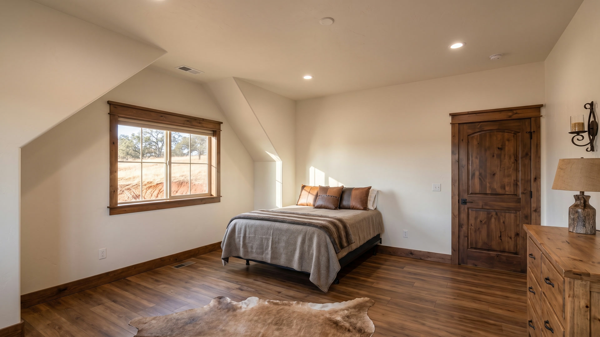

Rendering Set — August 2026
Red Bank Outdoor Academy
A thirteen-frame flythrough of the finished building, built on the construction photography, the architect's design, the cabinet shop drawings and the client's own finish selections.
These are renderings, not photographs. Each frame is an AI-generated visualization built on the as-built structure and the confirmed finish schedule. Materials reflect selections on record; exact colors, grain and fixtures will vary from the finished build.
Flythrough
The Walk













Finish Schedule
| Element | Specification |
|---|---|
| Structure | Pre-engineered steel rigid frame, tapered columns and rafters left exposed, warm white drywall infill between bays |
| Ceiling | Beetle-kill blue-stain pine tongue-and-groove — great room and game room |
| Fireplace | Full-height dry-stacked ledgestone on the long wall; stone voussoir arch; black arched woodstove insert, oversized; timber mantel; raised hearth; 70″ television set into the stone above |
| Fans | Black nine-blade, flat straight blades, short downrod |
| Doors | Knotty alder, arched top panel, two-panel, dark walnut stain, black levers and strap hinges |
| Trim | Knotty alder to match, with a heavy flat crown header over every casing |
| Cabinets | White shaker perimeter, black bar pulls; stained alder island base |
| Counters | Honed matte black |
| Island | Black-and-white veined granite, waterfall edge |
| Sink | Hammered copper apron farmhouse |
| Backsplash | Subway tile |
| Range hood | Shop-built tapered knotty alder |
| Flooring | Wide-plank luxury vinyl, warm mid-brown; polished concrete on the ground floor |
| Entrance tile | Surface Art “Brushed Metallic — Mocha” porcelain |
| Baths | Multicolor slate large format; river-pebble mosaic shower pan; slate curb; recessed niche |
| Railing | Horizontal flat-bar on stained square posts |